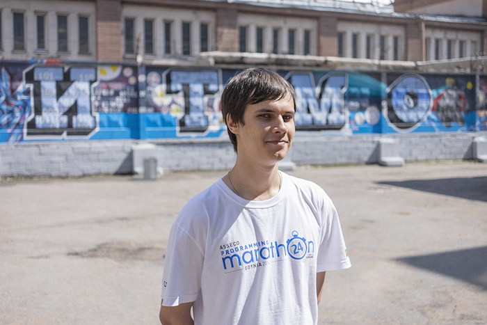

Испытал ли он радость?
На соревнованиях Russian Code Cup 2012 у меня взяли интервью, которое умудрились записать ужасно. Я попросил Пашу Маврина попытаться спасти его, что Паше удалось. Это, в частности, потребовало сократить время показа ролика почти вдвое.
Сообщение о том, что интервью выложено на YouTube, Паша, прокомментировал так, что мне сперва показалось, странным: «С видео с Russian Code Cup 2012 пришлось потрахаться!».
Казалось бы, все только и думают как заняться этим и подольше, и только Паша, почему-то, был недоволен этим. Я позвонил ему и после благодарности, высказал удивление его не традиционностью. Павел согласился со мной и пообещал в следующий раз реагировать в подобных ситуациях адекватно.
Когда я закончил писать этот текст, то вдруг понял, что, возможно, не прав был не Паша, а я – не так истолковал его сообщение о взаимоотношениях с видео – возможно, он мне сообщал, что у них все хорошо получилось... Хотя, слово «пришлось» оставляет у меня сомнение в том, что Паша испытал радость.
12.10.2020.

Просто классная фотка Гены
«После меня придут другие ребята»: как стать абсолютным чемпионом по программированию в 20 лет
никак)
К 20 годам студент Геннадий Короткевич — чемпион практически всех престижных соревнований по программированию. Олимпиада ACM ICPC, где третьекурсник выступил вместе со сборной Университета ИТМО. Победа принесла команде абсолютное чемпионство и была отмечена губернатором Георгием Полтавченко. Самая свежая победа программиста — VK Cup, финал которого прошел 27 июля. Короткевич вместе с Ниязом Нигматуллиным заняли первое место.
Завоевав первые места на соревнованиях Russian Code Cup, Google Code Jam, Facebook Hacker Cup и «Яндекс.Алгоритм», Короткевич однако не думает о карьере в IT, а намерен сначала окончить аспирантуру. «Бумага» поговорила с чемпионом и узнала, каким мифам о программистах не стоит верить и как не потерять интерес к учебе, собрав почти все возможные титулы.
Незадолго до встречи Короткевич сдал летнюю сессию — впереди у чемпиона еще один курс бакалавриата. В большой аудитории ИТМО Геннадий сидит один, неприветливо скрестив руки на груди. Короткевич не любит журналистов за пристальное внимание к себе и за легенды, которые всплывают во всех СМИ.
В а ш и л ю б и м ы е з а м е т о ч к и
№788. Где-то я недавно прочел о том, как сегодня достаточно часто проходят свидания: девушка «вся» в смартфоне, а молодой человек, который ей нравится, что-то говорит. В конце встречи, она благодарит его за прекрасно проведенный вечер и предлагает встретиться вновь. Часто говорить что-либо считается лишним, и каждый из пары «не вылезает» из своего смартфона. Это, конечно, не предел –все участники вечеринки, кроме играющих в настольные игры, «погружены» в свои телефоны.
№1486. Еще о том же. «Порядок бывает двух типов –мужской и женский.Идея женского порядкасостоит в том, чтобы все выглядело как можно более гладко. Предельный случай такого порядка –казарма после утренней приборки. Койки аккуратно заправлены, полоски на одеялах расположены строго по линейке, полы блестят. Правда, для людей втакой казарме места нет, они немедленно все нарушат. Разве что будут всю жизнь стоять строем... И в иной квартире, где порядок наводила хозяйка-аккуратистка, тоже места для жизнинет...» (Р.Герр).
№1687. В оценке нашей истории Путин идет все дальше. 21.01.2016 г. на заседании совета при Президенте РФ по науке и образованию глава Курчатовского института М. Ковальчук предложил создать в научной среде «организации, которые должны управлять течением мысли в конкретных направлениях», процитировав при этомстроки Б. Пастернака о Ленине:«Он управлял теченьем мысли / И только потому –страной».
№2844. Приведу пример моей борьбы за таланты.Работавший у нас молодой человек–чемпион России по программированию2010 г., за полгода до окончания университета был принят на работу в три корпорации.Первая из них находится в Южной Корее, вторая–в США, атретья –сначала предлагала работу в офисе в Санкт-Петербурге, а потом–в любом из своих офисов! Вэтих условиях я пыталсядоказать, что у нас на кафедре ему в некотором смысле будет лучше.